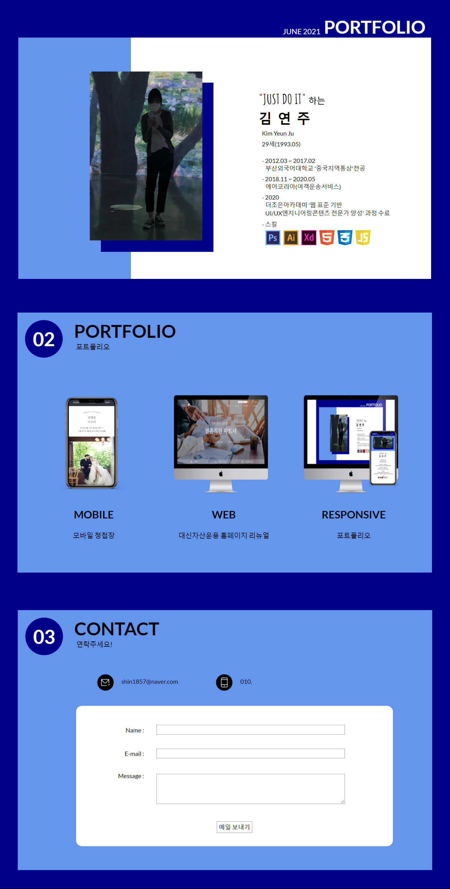
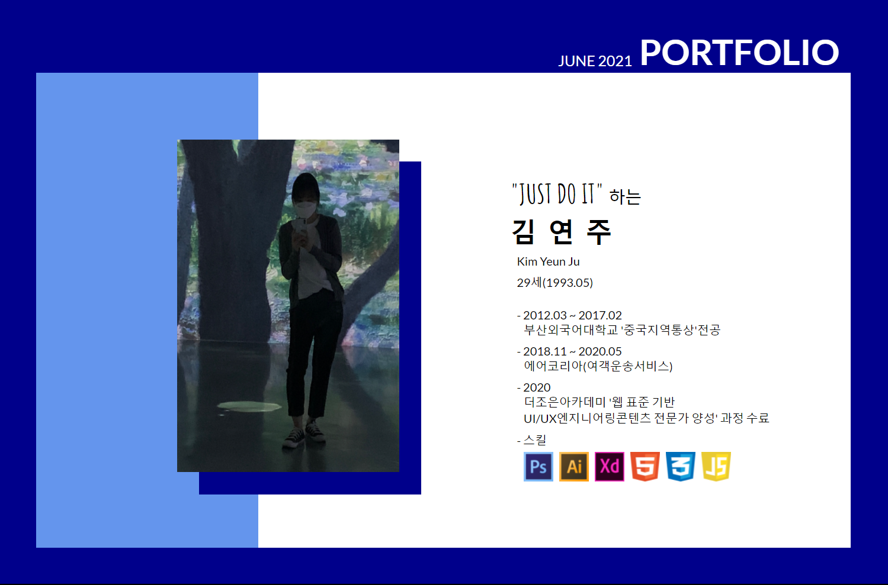
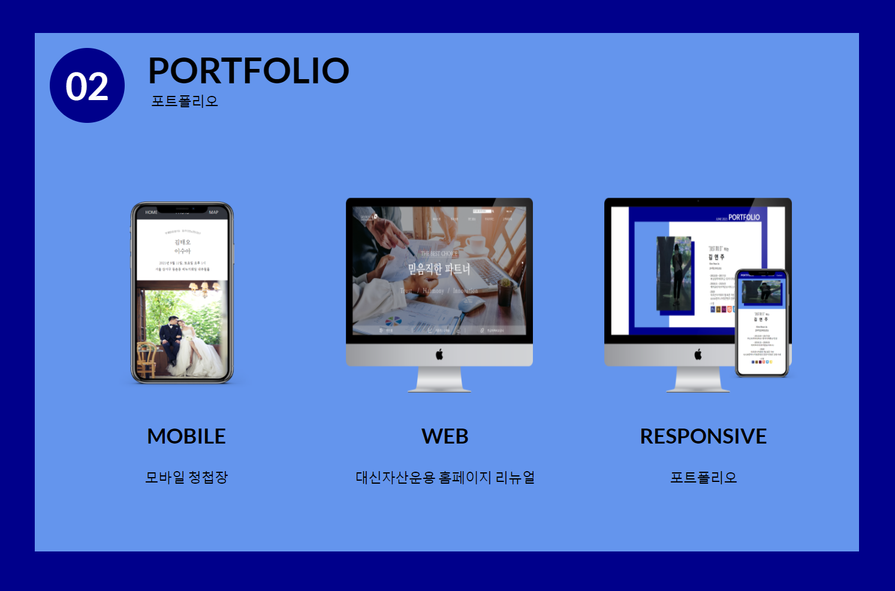
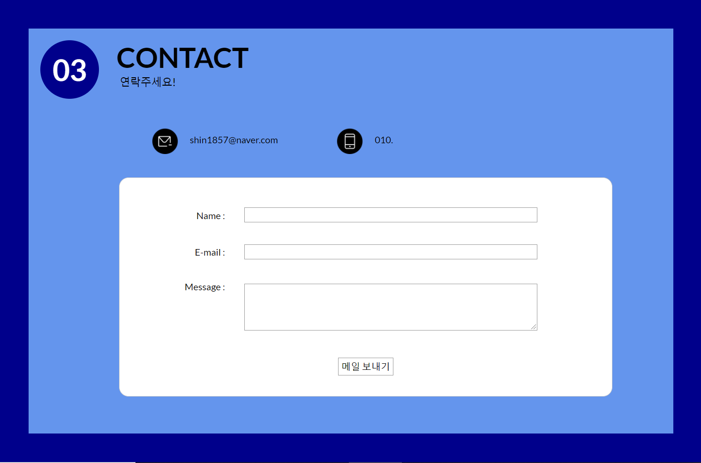

개인 포트폴리오
URL https://yjsportfolio.netlify.app
제작 소요기간 약 2주
참여도 개인작업(100%)
내용
- 메인페이지를 잡지디자인으로 만들어
- 반응형으로 여러 기기에서 최적화된 화면을 보여주도록 만듦
- 깔끔한 레이아웃과 필요한 정보만 보여주어 접근성을 높임
- COLOR : #6495ED
, #0047ab
- 서체 : Amatic SC , Lato(Bold, Regular)



